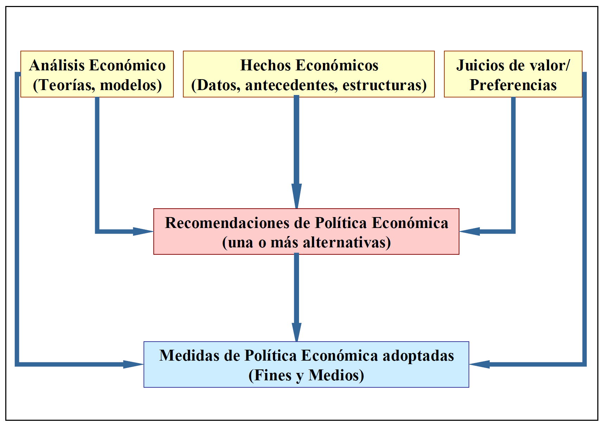

Tema 1🔗
Clasificación de las ciencias🔗
- Las ciencias sociales se centran en los seres humanos como seres sociales.
- Las ciencias empíricas utilizan proposiciones sintéticas contrastables (si no se verifican se quedan como hipótesis; si se verifica se convierte en ley). Dichas proprosiciones no deben ser tautológicas (deben tener un conocimiento añadido). También usan proposiciones de tipo formal (como las matemáticas), que establecen unas reglas de comportamiento.
Tautológico
Que tiene un valor añadido. Si digo "mañana llueve o no llueve", no proporciona un valor añadido.
La economía es a la vez una ciencia empírica y una ciencia social:
- Ciencia empírica: construye sus teorías y modelos a partir de la observación de la realidad.
- Ciencia social: el objetivo es el estudio de las relaciones económicas del ser humano, no algo físico.
Definiciones de la economía🔗
- Adam Smith: ciencia de la riqueza o que enseña a adquirir riqueza
- John Stuart Mill: ciencia que estudia las leyes que regulan la producción, la distribución y el consumo de la riqueza
- Karl Marx: ciencia que estudia las relaciones entre los individuos en los procesos de producción y distribución de bienes
- Corriente marginalista: ciencia de los precios (del valor)
- Ciencia lúgubre, Carlyle: ciencia de la escasez
- Robbins: ciencia de la elección
- Jacov Viner: Economía es todo lo que hacen los economistas
Keynes, 1924
"Los economistas buenos escasean como los pájaros exóticos. Esta paradoja se explica porque el economista necesita poseer una combinación de dotes poco frecuente"
"Debe estudiar el presente en función del pasado y pensando en el futuro"
von Hayek
"Ningún economista puede ser sólo economista"
La distinción positivo-normativa🔗
La realidad se puede analizar desde dos perspectivas distintas:
- 1️⃣ Analizar una dimensión espacial y/o temporal (aspecto empírico o positivo): medir algo real, si mido una mesa y me da 2 metros nadie puede estar en contra → campo del SER
- 2️⃣ Fundamento de las decisiones, de las reglas de acción (aspecto normativo): poner pegas a la mesa - debería ser más grande, más pequeña, etc. No necesariamente unas posiciones son mejores que otras, no se pueden comparar → campo del DEBER-SER
| Positivo | Normativo |
|---|---|
| Descripción | Prescripción |
| Explicación | Recomendación |
| Teoría | Práctica |
| Pensamiento | Acción |
| Leyes (uniformidades) | Reglas (normas) |
| Ciencia | Arte |
| Juicios sobre los hechos | Jucios de valor |
| Declaraciones en modo indicativo | Declaraciones en modo imperativo |
| Proposiciones que se pueden probar acerca de los hechos | Expresiones no comprobables de sentimientos |
| Empirismo | Normativismo |
Distinción entre lo positivo y lo normativo🔗
| Economía positiva | Economía normativa |
|---|---|
| Estudia los fenómenos económico, las fuerzas que los causan y busca predecir sus consecuencias ceteris paribus |
Busca los criterios que guían las decisiones económicas y opina sobre los objetivos a lograr por la actividad económica Juicios de valor, los criterios son subjetivos. Opiniones. |
| ¿Qué ocurre con la cantidad que se demanda de un bien ante una subida de su precio en el mercado? ¿Cómo afecta una bajada de los tipos de interés a las inversiones que hacen las empresas? |
¿Deben los gobiernos mantener unos bajos niveles de impuestos? ¿Hay que gravar el ahorro o la movilidad de capitales? ¿Es necesario subvencionar la cultura? |
Características de la ciencia económica:
- Ciencia joven, moderna (Desde 1776) : La economía es la más antigua de las artes y la más moderna de las ciencias
- Ciencia "blanda": no hay verdades económicas universales. Irrealismo de los supuestos (condición
ceteris paribus) - Ciencia empírica: se ocupa de la realidad
- Ciencia social: se ocupa de las relaciones entre las personas
- Ciencia con doble vertiente: positivo-normativa (ciencia empírica positiva, pero no existe ciencia social desinteresada)
- Distintos enfoques: microeconomía y macroeconomía
Extra: la política económica como disciplina autónoma dentro de la ciencia económica
Características de la política económica como conocimiento autónomo:
- Antecedentes: cameralismo y escuela histórica alemana (ciencia de la adminsitración pública). Los burócratas alemanes que trabajaban para la administración pública
- Tradición continental europea: en países anglosajones. Los anglosajones parten la política en sus distintas partes (económica, industrial, agraria, transportes, exterior).
- Relación intensa con otras ramas de la economía: relacionada con la Hacienda Pública (gestiona los ingresos y gastos públicos, reflejado en los presupuestos generales), con la esctructura económica y con la econometría.
- Impulso con la aportación keynesiana: Keynes dice que el mercado no resuelve los problemas de la socidad, necesita el sector público. Introduce el concepto intervecionismo - ante fallos del mercado el sector público interviene.
- Tributaria del análisis económico teórico: no estudiaremos el modelo en sí, sino para qué sirve ese modelo económico.
- Interacción con las otras ciencias sociales (política): poder económico \(↔\) poder político. El poder económico no conlleva poder político.
El concepto de la política económica🔗
La política económica como praxis: actuaciones y medidas adoptadas por las autoridades públicas, fruto de una acción deliberada que pretende afectar a un conjunto de fines u objetivos de carácter socioeconómicos.
- Debe ser una autoridad pública (NO HAY POLÍTICA ECONÓMICA PRIVADA)
- Debe ser una acción deliberada (puede ser no hacer nada deliberadamente, dejar pasar)
- Los objetivos deben ser deseables (un objetivo no puede ser "incrementar el paro" porque el paro no es deseable)
La Política Económica como teoría🔗
La Política Económica (teoría) es el estudio y análisis científico del proceso de toma de decisiones por los gobiernos y otras instituciones con el objetivo de conseguir un efecto económico deseable. hay que definir criterios, fines y medios de la actividad politico-económica del Estado
Teoría y práctica
Nos referimos a la parte teórica como Política Económica, y a la parte práctica como política económica.
Contenido de la Política Económica: estudio del concepto (tema 1), método (tema 1), objetivos (tema 2), instrumentos (tema 3) y proceso de elaboración (temas 4 y 5) de la Política Económica.
Evolución del concepto de política económica🔗
Info
La política económica (como práctica) es anterior a la economía como ciencia. Se hacía con anterioridad a Adam Smith.
Definiciones:
- Arte económico: hasta finales del siglo
XIX. - Estudio acción del estado en lo económico: siglo
XX. - Rama de la ciencia política
- Ciencia normativa
- Técnica económica
- Economía aplicada (lo más cercano a lo actual)
Concepción actual
Una disciplina mixta "positivo-normativa" de la Economía, interrelacionada con el Análisis Económico Teórico (parte positiva) y ocn la Ciencia Política, que se mueve en la vertiente de las recomendaciones económicas (parte normativa) y estudia el tratamiento científico de las acciones llevadas a cabo por el Estado y por otros agentes institucionales para dirigir la economía hacia el logro de unos determinados fines.
Decisiones🔗

Tenemos unos hechos económicos que pueden venir dados por estadísticas, antecedentes, etc. Ej: descenso del nivel de consumo, aumento del nivel de paro, descenso del nivel de inflacción, reducción del PIB, etc. Son objetivos.
Tenemos unaas referencias o juicios de valor, ideologías económicas. Ej: intervencionismo, liberalismo, proteccionismo, etc.
Tenemos un modelo que parte de una serie de sucesos. Ej: modelo de demanda agregada keynesiana, DA = Consumo + Inversión + Gasto público + eXportaciones - iMportaciones.
Teniendo en cuenta estos tres factores podemos emitir recomendaciones de Política Económica (una o más alternativas). Ej: bajar los tipos de interés, reducción de impuestos, devaluación monetaria, reformas estructurales, etc.
Al final tenemos una serie de medidas de Política Económica adoptadas en las cuales se tienen que explicar las relaciones entre los fines y los medios.
La política económica en el pensamiento económico🔗
Mercantilismo🔗
La riqueza en dinero (oro, plata) es el valor supremo y el comercio es la forma de obtener esa riqueza. Objetivo: mantener una balanza comercial más favorable (exportaciones > importaciones)
- Continúa la intervención del Estado
- Proteccionismo comercial (reducción de importaciones)
- Potenciación de la industria y de las exportaciones
Escuela clásica🔗
La riqueza se deriva de los bienes y servicios producidos que se encuentren disponibles en el mercado y no de la cantidad de dinero.
- Minimización de las intervenciones públicas en el ámbito económico (división de Bentham), reservando al Estado tres funciones exclusivamente:
- Asegurar la defensa nacional
- Administración de justicia
- Realización de obras de indudable interés público
- Contraria al control público de precios, monopolios, proteccionismo, reglamentación pública, etc.
Marxismo🔗
Ideología que aspira al derrumbamiento final del sistema capitalista
- La Política Económica es un instrumento al servicio del sistema capitalista para procurar supervivencia y de la propiedad privada de los medios de producción.
Escuela neoclásica🔗
Formalización económica y desarrollo del análisis marginal (microeconómico).
- Interés por el estudio del equilibrio y del papel de las fuerzas del mercado.
- Escaso interés por el papel de las políticas públicas.
Keynesianismo🔗
Justificación teórica de la necesidad de la intervención del sector público en la economía y relevancia del enfoque macroeconómico.
- Aporte de instrumental analítico y desarrollo del cuerpo teórico de la Economía (Teoría General)
- Política Económica basada en recomendaciones a favor de la intervención pública (políticas activas). Como un médico, ¿qué hago si tengo paro? Miro el manual.
- Supuestos de Harvey Road: confianza en decisiones de política económica, cultos y juiciosos, que buscan siempre el bien común y el progreso económico.
El método en política económica🔗
Método: conjunto de operaciones ordenadas con las que se pretende obtener un resultado.
Consideraciones:
- Dificultades por la falta de consenso y por la existencia de múltiples controversias.
- Se encuadra en el campo de la Teoría de la Política Económica.
- Existen dos enfoques princpales:
- Enfoque convencional → esquema fines-medios (piensan que todo es maravilloso, como la competencia perfecta). Muy cuestionado al no considerar la interrelación existente entre
políticaypolítica económicay por otros fenómenos - Enfoque crítico: nueva teoría de Política Económica.
- Enfoque convencional → esquema fines-medios (piensan que todo es maravilloso, como la competencia perfecta). Muy cuestionado al no considerar la interrelación existente entre